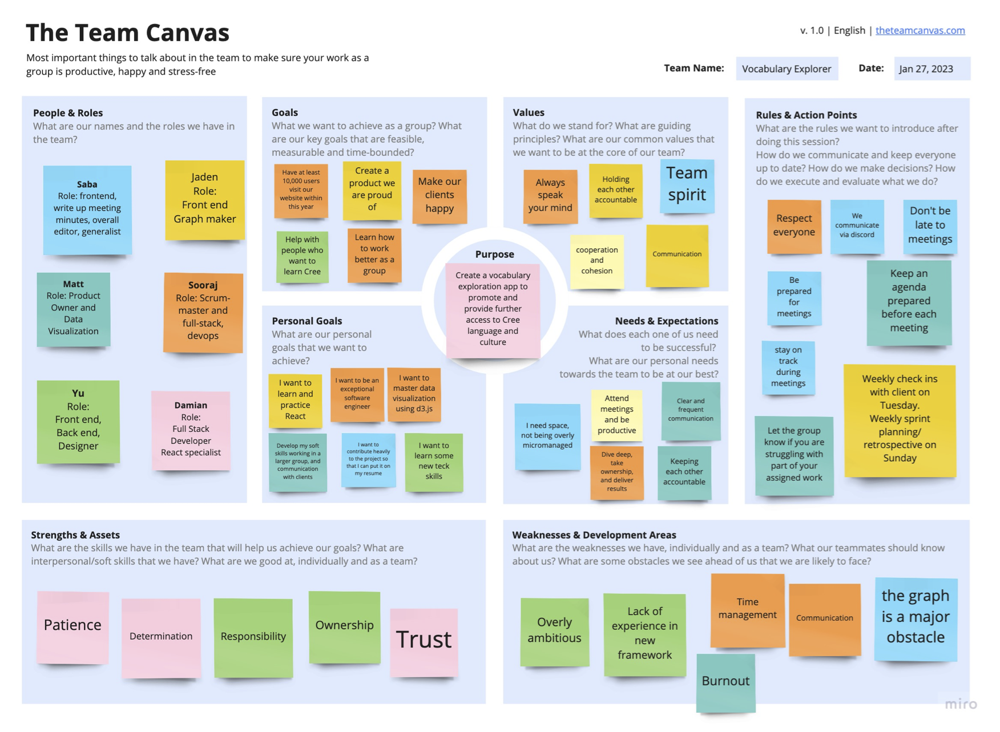

Teamwork
Team Canvas

Belbin Roles
| Member Name | Preferred Roles | Manageable Roles | Least Preferred Roles |
|---|---|---|---|
| Ke Li | IMP ME SH | CF PL RI | CO SP TW |
| Sooraj Arakkal | CF IMP SP | CO PL SH | ME RI TW |
| Matthew Shocrylas | IMP ME SP | CF PL TW | CO RI SH |
| Jaden Huang | CF CO PL | IMP SP TW | ME RI SH |
| Yu Liu | CO ME TW | CF IMP RF | PL SH SP |
| Saba Gul | IMP ME TW | CO PL SP | CF RI SH |
Thinking Roles
PL (Plant)
Tends to be highly creative and good at solving problems in unconventional ways.
- Jaden Huang (preferred)
- Ke Li (manageable)
- Sooraj Arakkal (manageable)
- Matthew Shocrylas (manageable)
ME (Monitor Evaluator)
Provides a logical eye, making impartial judgements where required and weighs up the team's options in a dispassionate way.
- Ke Li (preferred)
- Matthew Shocrylas (preferred)
- Yu Liu (preferred)
- Saba Gul (preferred)
SP (Specialist)
Brings in-depth knowledge of a key area to the team.
- Sooraj Arakkal (preferred)
- Matthew Shocrylas (preferred)
- Jaden Huang (manageable)
Action Roles
SH (Shaper)
Provides the necessary drive to ensure that the team keeps moving and does not lose focus or momentum.
- Ke Li (preferred)
- Sooraj Arakkal (manageable)
IMP (Implementer)
Needed to plan a workable strategy and carry it out as efficiently as possible.
- Ke Li (preferred)
- Sooraj Arakkal (preferred)
- Matthew Shocrylas (preferred)
- Saba Gul (preferred)
CF (Completer Finisher)
Most effectively used at the end of tasks to polish and scrutinise the work for errors, subjecting it to the highest standards of quality control.
- Sooraj Arakkal (preferred)
- Jaden Huang (preferred)
People Roles
RI (Resource Investigator)
Uses their inquisitive nature to find ideas to bring back to the team.
- Ke Li (manageable)
TW (Teamworker)
Helps the team to gel, using their versatility to identify the work required and complete it on behalf of the team.
- Yu Liu (preferred)
- Saba Gul (preferred)
CO (Co-ordinator)
Needed to focus on the team's objectives, draw out team members and delegate work appropriately.
- Jaden Huang (preferred)
- Yu Liu (preferred)
- Sooraj Arakkal (manageable)
- Saba Gul (manageable)
Scrum Roles
Sprint 1
Product Owner: Matthew Shocrylas
Scrum Master: Sooraj Arakkal
Sprint 2
Product Owner: Matthew Shocrylas
Scrum Master: Sooraj Arakkal
Sprint 3
Product Owner: Matthew Shocrylas
Scrum Master: Sooraj Arakkal
Sprint 4
Product Owner: Matthew Shocrylas
Scrum Master: Sooraj Arakkal
Sprint 5
Product Owner: Matthew Shocrylas & Saba Gul
Scrum Master: Sooraj Arakkal
Meeting Minutes
Hosted on Google Docs: Client Meeting Minutes & Internal Meeting Minutes